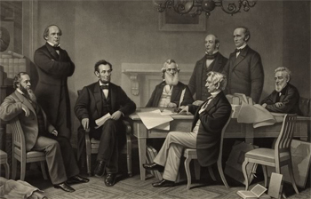
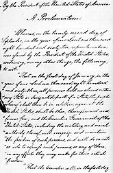

|
The Emancipation Proclamation, issued on January 1, 1863 by President Abraham
Lincoln, has proven to be one of the landmark documents of American history. In
it Lincoln freed all of the slaves residing in Confederate states not under
Union Army occupation. The Emancipation Proclamation changed the tenor of the
Civil War by linking the Union cause with the liberation of the slaves.
The idea for an Emancipation Proclamation originated in the actions of slaves
during the war. From the beginning of armed conflict, slaves near the battle
lines crossed over to the Union Army camps. Unwilling to return the slaves
because the Confederate Army was using them to build forts and other armaments,
Union army officials did not know at first what to do with fugitive slaves.
Congress stepped in and passed the first Confiscation Act in August 1861. It
declared that slave owners forfeited their rights to slaves if their slaves were
used in military service. Nearly a year later, Congress passed a second
Confiscation Act. This one was more emphatic, claiming that slaves of any
person actively supporting rebellion would be "forever free of their servitude."
Congress also issued a Militia Act, which stated that any slave who gave
service to the military would be free, as would his family. Still, by the summer
of 1862, there was no official "emancipation," or freeing of slaves. The war was
still for "Union."
|

One of the original drafts of the Emancipation Proclamation,
which transformed the Civil War into a war against slavery.
|
Lincoln detested slavery, but early in the conflict, he feared that
emancipation would provoke the border states into joining the Confederacy. He
also had doubts about the legality of an emancipation act from Congress, and
hoped to provide monetary compensation to slave owners as a compromise measure.
In the period between the two confiscation acts, abolitionists, Republican
politicians, newspaper editors, and various citizen groups pressured Congress,
but especially President Lincoln, to emancipate the slaves.
During the spring and summer of 1862, Frederick Douglass, the most
influential African American at the time, and Charles Sumner, the abolitionist
Senator from Massachusetts, met frequently with Lincoln, hoping to push him
toward immediate and unconditional emancipation, but Lincoln remained steadfast.
In a famous reply to newspaper editor Horace Greeley, Lincoln wrote, "If I
could save the Union without freeing any slave I would do it, and if I could
save it by freeing all the slaves I would do it, and if I could save it by
freeing some and leaving others alone I would also do that." But even as he
reaffirmed his primary public commitment to preserving the Union, privately
Lincoln was beginning to fashion an emancipation order. He read an early draft
to his cabinet in July 1862. Most cabinet members favored emancipation, but a
few questioned the timing of the order. There was pressure for immediate
emancipation to forestall foreign (especially British) aid and recognition of
the Confederacy, however with the poor showing of the Union Army in the field,
the cabinet did not want emancipation to be seen as an act of desperation.
Lincoln decided to wait for a military victory.
Lincoln got his victory at Antietam, and issued a Preliminary Emancipation
Proclamation on September 22, 1862. Under his authority as commander-in-chief,
Lincoln declared that as of January 1, 1863, slaves in those states still in
rebellion would be freed. As a compromise measure, the Proclamation included a
compensation provision for loyal slave owners and suggested colonizing ex-slaves
in another part of the country or overseas. Nonetheless, the impact of the
Proclamation was polarizing. Slaves in the border states, though unaffected by
the terms of the order, began to act like freedmen, refusing to do work and
demanding respect from whites. Abolitionists praised Lincoln's decision, but
many more in the North were critical, contributing to Republican defeats in the
fall elections.
On New Year's Day 1863, Lincoln issued a final Emancipation Proclamation. "I
do order," it stated, "and declare that all persons held as slaves within said
designated States and parts of States are and henceforward shall be free."
Unlike the preliminary proclamation, this one specified which areas were
included by the order. All of Arkansas, Texas, Mississippi, Alabama, Florida,
Georgia, South Carolina, and North Carolina fell under the authority of the
Emancipation Proclamation, but Lincoln excluded twelve parishes in Louisiana,
fifty-three counties in Virginia, all of Union-occupied Tennessee, and the
border states of Delaware, Kentucky, Maryland, and Missouri.
Over 700,000 slaves remained in bondage, but the legalities of the
Emancipation Proclamation made little difference to slaves across the country.
While the document actually freed very few slaves since most areas under Union
occupation were exempt and those under Confederate control were out of reach,
the proclamation encouraged slaves to assert their freedom everywhere. Wherever
the Union army moved, slavery effectively ended.
Besides the geographic boundaries, there were two other significant changes
in the final Emancipation Proclamation. First, Lincoln left out any mention of
compensation and colonization. Second and more important, the Emancipation
Proclamation called for the enlistment of African-American soldiers: "And I
further declare and make known that such persons, of suitable condition, will be
received into the armed service of the United States, to garrison forts,
positions, stations, and other places, and to man vessels of all sorts in said
service." Recruiters spread across the country, and by the war's end, 180,000
African Americans had served in the Union armed forces. Lincoln had turned
Confederate slave labor into Union fighting power.
|

One of the original drafts of the Emancipation Proclamation,
which transformed the Civil War into a war against slavery.
|
The Emancipation Proclamation also represented a shift in focus for the war
effort. Lincoln believed that the Civil War could not be won without
emancipating the slaves. By arming former slaves, Lincoln gave them an
opportunity to fight for their own freedom, and, in so doing, fight for their
country. More than just adding muscle to the armed services, enrolling black
soldiers implied that at war's end, they would receive full citizenship rights,
by virtue of their service.
Celebrations erupted across the North to praise the Emancipation
Proclamation. Few stopped to consider that only a tiny number of slaves were
officially freed, since the Confederate government controlled most of the areas
detailed in the document. Instead, the celebrants, mostly blacks and
abolitionists, insisted that the Emancipation Proclamation had injected a moral
element into the War, giving it a new cause. Lincoln noted the morality of his
decision, writing that he believed emancipation to be "an act of justice,
warranted by the Constitution, upon military necessity." The document had
immediate practical benefits as well, as the British government backed away from
recognizing the Confederacy soon after Lincoln issued the Proclamation.
The Thirteenth Amendment officially ended slavery in the United States in
December 1865, but the Emancipation Proclamation was the crippling blow to the
slave system in the United States.
Source: Joan Waugh, ed., Facts on File Encyclopedia of American
History: Civil War and Reconstruction, 1856 to 1869 (New York: Facts on
File, 2003), 114-115.
|